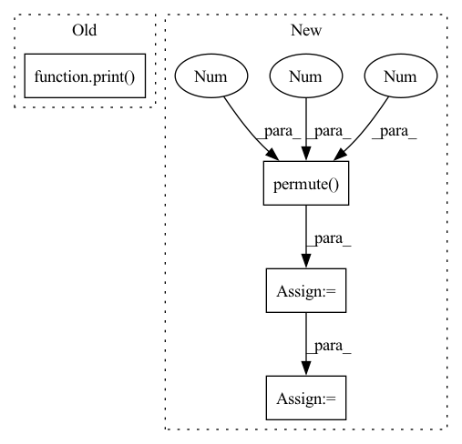

Pattern ID :34062
Before Change
b = dcmo_grad.sum(-2)
assert(torch.allclose(a, b))
except:
print( " === Warning test_grad_cmo partial sum is failing !!")
def test_hess_cmo(self):
Hessian of the correlated MOs.
val = self.wf.pos2cmo(self.pos)After Change
cmo = self.wf.pos2cmo(self.pos)
dcmo = self.wf.get_gradient_operator(self.pos)
dcmo = dcmo.permute(1 , 2 , 3, 0 )
shape = (self.nbatch, self.wf.nelec,
self.wf.nmo_opt, self.wf.nelec, 3)
dcmo = dcmo.reshape(*shape)
dcmo = dcmo.sum(2).sum(1)
dcmo_grad = grad(cmo, self.pos,In pattern: SUPERPATTERN
Frequency: 3
Non-data size: 4
Instances Fragment ID: 97409998
Project Name: nlesc-jcer/qmctorch
Commit Name: a021a83abc01bb42653765ae3bdae08ade39dc02
Time: 2021-01-19
Author: nicolas.gm.renaud@gmail.com
File Name: tests/test_wavefunction_generic_correlated_orbital.py
M Class Name: TestCorrelatedOrbitalWF
N Class Name: TestCorrelatedOrbitalWF
M Method Name: test_grad_cmo(1)
N Method Name: test_grad_cmo(1)
M Parent Class: unittest.TestCase
N Parent Class: unittest.TestCase
M File Name: tests/test_wavefunction_generic_correlated_orbital.py
N File Name: tests/test_wavefunction_generic_correlated_orbital.py
M Start Line: 156
M End Line: 176
N Start Line: 146
N End Line: 158
Before Change
bkin = self.get_kinetic_operator(x)
kin = self.pool.operator(cmo, bkin)
print( kin.shape)
psi = self.pool(cmo)
out = self.fc(kin * psi) / self.fc(psi)
return outAfter Change
hess = self.pool.operator(cmo, bhess)
// compute 2 * \nabla A
bgrad = self.get_gradient_opeator(x).permute(3 , 0 , 1 , 2)
// compute 2 * (tr(A_u^-1\nabla A_u) * tr(A_d^-1\nabla A_d))
grad = self.pool.operator(cmo, bgrad, op=operator.mult)
// assemble the total kinetic values
kin = hess + grad
// compute the total wf
psi = self.pool(cmo) Fragment ID: 97409999
Project Name: nlesc-jcer/qmctorch
Commit Name: a2e5da93c127893a7d4cff11c6c1c158d90cb38a
Time: 2020-11-18
Author: nicolas.gm.renaud@gmail.com
File Name: qmctorch/wavefunction/wf_correlated_orbital.py
M Class Name: CorrelatedOrbital
N Class Name: CorrelatedOrbital
M Method Name: kinetic_energy_jacobi(2)
N Method Name: kinetic_energy_jacobi(2)
M Parent Class: OrbitalBase
N Parent Class: OrbitalBase
M File Name: qmctorch/wavefunction/wf_correlated_orbital.py
N File Name: qmctorch/wavefunction/wf_correlated_orbital.py
M Start Line: 208
M End Line: 209
N Start Line: 215
N End Line: 230
Before Change
def forward(self, x):
print(x.shape)
print( x.dtype)
embed = self.embedding(x) // [batch_size, seq_len, embeding]=[64, 32, 64]
out, _ = self.lstm(embed)
out = torch.cat((embed, out), 2)
out = F.relu(out)After Change
// print(out.shape) // [300,812]
fc_output = torch.tanh(self.fc(out)) // [batch_size, max_seq_len, hidden_size*2]
maxpool_input = fc_output.permute(0 , 2 , 1 ) // [batch_size, hidden_size*2, max_seq_len]
maxpool_output = self.maxpool(maxpool_input).squeeze() // [batch_size, hidden_size*2]
cls_input = self.dropout(maxpool_output)
out = self.classfier(cls_input)
return out Fragment ID: 97409984
Project Name: ygzwqzd/lamda-ssl
Commit Name: 2bff86050026e23fa26339d45b62e1077805a3d6
Time: 2022-02-19
Author: 1129198222@qq.com
File Name: Semi_sklearn/Network/TextRCNN.py
M Class Name: TextRCNN
N Class Name: TextRCNN
M Method Name: forward(2)
N Method Name: forward(2)
M Parent Class: nn.Module
N Parent Class: nn.Module
M File Name: Semi_sklearn/Network/TextRCNN.py
N File Name: Semi_sklearn/Network/TextRCNN.py
M Start Line: 23
M End Line: 31
N Start Line: 31
N End Line: 39